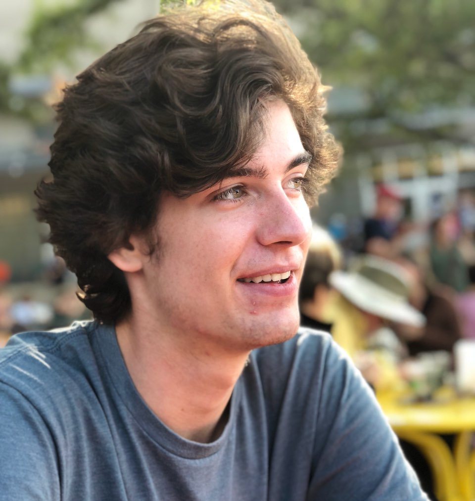
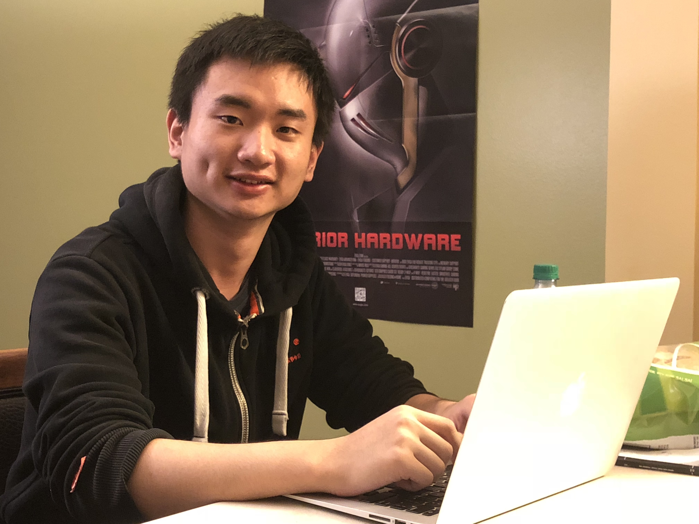
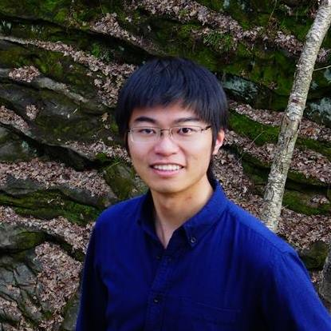

AI@UW Leadership
Co-President, Study Group Leader

Declan Campbell joined AI@UW in fall 2017 and is a sophomore studying Computer Science and Neurobiology at the University of Wisconsin. In past internships, Declan has applied autoencoders to the task of unsupervised anomaly detection and worked to identify anomalies in non-stationary time series data. Declan is leading the study-tensorflow group this semester and is excited to help you learn more about AI!
Co-President, Engineering Manager, Study Group Leader

Chris Endemann helped co-found AI@UW in 2017, and has since played a lead role in managing and directing the club’s operations. His interest in AI/ML research stems primarily from his love for reverse engineering the neural algorithms controlling sensation (qualia), perception (categorization of qualia), memory-processing, and decision-making behavior. In his spare time, Chris leads the Algorithmic Trading Team and the Neuro-Inspired AGI study group.
Head of Engineering

Abhay Venkatesh co-founded AI@UW in April, 2017, and served as the founding President for the club. In the past, he has interned and worked with Facebook, Stanford, and MIT. Currently, he is responsible for advising the club on operations, and heading the engineering efforts of the club. He is a research assistant for Dr. Vikas Singh, doing work in Computer Vision and Machine Learning.
Head of Finance

Rakshith Padmanabha co-founded AI@UW in April, 2017, and is responsible to manage and budget funds for the club. In the past, he has interned and worked with Zynga.
Head of Marketing

Keshav Sharma co-founded AI@UW in 2017, and has been leading the club’s marketing. He has mentored Stanford’s online course on Machine Learning taught by Andrew Ng. Keshav has also interned at UW’s IoT Research Center and Pivotal. Currently, he is working with Google to improve onboarding of students onto Cloud technologies. Upon graduation, Keshav will be joining Pivotal as a product manager.
Head of Business Development

Nickolas Comeau joined AI@UW in January, 2018, and was invited to the executive board during the following summer. He is particularly interested in computational biology and exploring machine learning through the lense of neuroscience. His current role in the organization is to assist in the management of a learning group on Tensorflow, assist with general administrative tasks, and explore possible sponsorship and fundraising opportunities.
Engineering Manager

Zhichun Huang joined AI@UW in October, 2017. He is a machine learning enthusiast, a hardcore gamer, and a soda addict. He is the engineering manager for the Kaggle Team.
Engineering Manager

Dandi Chen joined AI@UW in October, 2018. She holds a computer science master degree and now is majored in biomedical data science at UW-Madison. Prior to Madison, she worked at Weill Cornell Medicine for applying machine learning algorithms to biomedical applications. Her research interests are machine learning, computer vision, natural language processing, health informatics, etc. She is leading Skin Lesion Analysis Team at AI@UW.
Engineering Manager

Jinman Zhao joined AI@UW in 2017. He is a PhD student in computer science. Interested in machine learning, programming languages and linguists, he is trying to apply deep learning to help better understand source code. He is leading Learning Source Code Team.
Engineering Manager
Andy Leicht is currently a graduate student in the Bacteriology Masters program at UW-Madison, and joined the Artificial Intelligence UW club in fall 2018. Systems Biology modeling in a major interest of his, along with regenerative medicine. He is leading the Generalized Data Mining of Science Journals in order to help chop up the elephants body of scientific knowledge into fun size bites for better digestion.